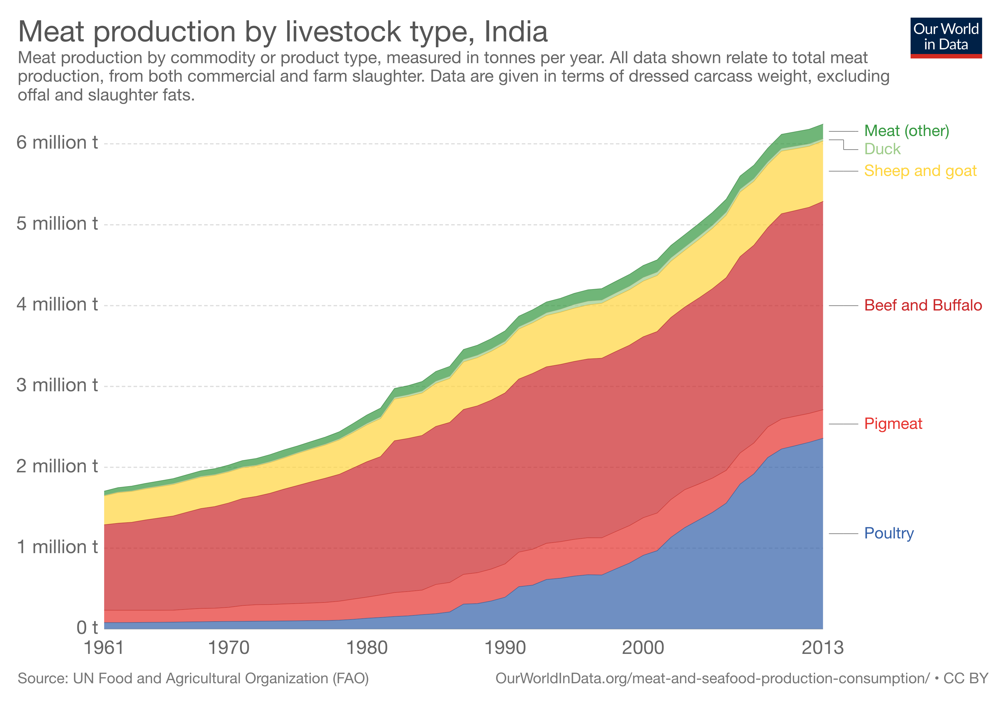

Though it is often assumed that India is a vegetarian country, the data seems to be telling us a different story—meat consumption in India is increasing rapidly now more than ever. Meat production in the country has drastically spiked since the 1960s. The rest of the world synchronises with this; global meat production has grown 4-5 fold in the same time period.
For ethical vegans—and for the vegan movement in general—this statistic can be a nightmare. Although global popularity has grown for vegan diets, the corresponding steady increase in meat consumption poses some important questions for the future of veganism: Is it just a fad that appeals to a certain stratum of society? Will we ever transition towards a country—and a world—where we don't kill for food anymore?
Only nearly 22 percent of the world's population classify themselves as vegan/vegetarian; 20 percent in India and just 5 percent in the US. Even though there has been an emergence of vegan movements, the outcome has been rather weak and unstable. 84% of the non-vegetarians in the US who do cross the bridge and adopt vegetarian diets end up reverting back to meat. We are yet to see vegan measures that sustain vegetarianism and induce a significant decrease in meat consumption.
84% of non-vegetarians who adopt vegetarian diets end up reverting back to meat.
If we were to see a drastic decline in the demand and supply of meat, we have to reflect on the current vegan rhetoric that is often used to convince the larger part of the population, ie, orthodox non-vegetarians. Currently, many vegan campaigns bank on the morality argument, often telling people to quit consuming meat because it is immoral and results in the loss of precious life. While this is certainly a compassionate perspective that needs to be heeded, its overall effectiveness in changing the firm convention of meat consumption is questionable.
In terms of conventional morality, killing a living organism is wrong and there's no disputing that. But this moral viewpoint may not help in curbing non-vegetarianism because the supply chain is designed in a way that prevents non-vegetarians from going through the trauma and guilt from slaughtering an animal. Sure, non-vegetarians are still facilitating the killing of animals, but they're not personally involved in the act of butchering.
Is the position moral? No, not at all. Non-vegetarians are still murderers if you like to look at it that way. However, this fact may not help in compelling many meat-eaters to stop eating meat because the majority are blinded from the slaughter that's happening behind the scenes. If all meat eaters were made to hunt and kill for their own meat, there's a possibility that the number of non-vegetarians would be much lesser. Sadly, the market just doesn't work that way.
"Show them how it is then! Mass-advertise on animal slaughtering!", my riled up vegan friend exclaims as I write this piece. The brutal truth: in most cases, they don't work too. Such documentaries and ads have only shifted the rhetoric from killing animals inhumanely, to being more sensitive, giving them a good life, and ultimately ending up with the same result: killing them.
Such documentaries and ads have only shifted the rhetoric from killing animals inhumanely, to being more sensitive, giving them a good life, and ultimately ending up with the same result: killing them.
Organizations like PETA which often use hyperbolic advertising and behind-the-scenes documentaries to condemn meat consumption have often failed to convince the average non-vegetarian. Detractors often find PETA's ads to be offensive. Studies have observed that sexualized imagery to further ethical campaigns have also failed. A question on Quora which asked if PETA ads have ruined eating meat, almost all of the answers were in the negative—"hell no" and "not even the slightest" were some of the common responses.
While it is true that a significant number of vegans in the US have adopted a vegan diet due to moral reasons, it is important to consider that research has found out that ethical vegans have reported to have greater disgust with meat and a more intense emotional reaction to meat consumption. It was hypothesised that this emotional reaction might have motivated a quicker transition to veganism. This sensitivity, however, might not necessarily be a characteristic of the larger population. Normal non-vegetarians may not show the same level of disgust as ethical vegans, which could nullify the effect of moral arguments against non-veganism.
The ineffectiveness of morality is evident in India, where a study on Indian attitudes toward farmed animals found that Indians were generally less likely to sympathize with pro-animal sentiments than in other countries like the US, Russia, and China. Adding to that, only nearly half of Indians (about 52%) would support a law that mandated animals to be treated more humanely. It was reported that one in five (18%) would oppose such laws; low prices of meat were perceived to be more important by this section.
Only half of Indians would support a law that mandated animals to be treated more humanely. One in five would oppose such laws; low prices of meat were perceived to be more important by this section.
All this begs the question: why is this so? Are non-vegetarians just outright insensitive?
More than the sense of morality—which can be highly subjective and can differ from the norms for different people—this is a case of practicality. Mankind has had a meat-full diet for as long as one can remember. The practice has been so deeply drilled into societal norms and traditions that it is unlikely a moral argument—which hasn’t worked all this while—will be able to reverse such conventions.
On top of this, whether we like it or not, taste is still a major factor. In fact, it is the deal-breaker for many. The tase of meat is so appealing to a large number of meat consumers that it may render them unsympathetic towards animal sentiments.
So the combination of the facts that most people don't directly kill for their own meat, it's widespread consumption, and it's distinctive taste, overrides and trivializes the ethical argument even though the argument is more moral and rational.
But this can be changed. It's just that the moral argument won't work effectively in doing so. What will work, and what vegan discourses should be focusing on, is opening up the vegan alternatives that emulate the taste of meat. Companies like Beyond Meat in the US, and GoodDot in India, have been able to do exactly this: developing plant-based products that mimic the taste of meat. And no, we're not just talking about Tofu meat. These products are made up by analyzing what really makes meat, meat. The results have been positive too; some even consider the fake meat to be better than the real meat.
If widespread veganism is the goal, vegan activism should focus on making fake meat products more scalable, cheaper, and accessible. Solely relying on the humanistic aspect, and therefore adopting measures that antagonise meat consumers, may work for a few, but may turn out to be highly ineffective in convincing the larger population.
Unless we arrive at a scenario where plant-based products can completely eliminate meat products, and where joints like KFC or McDonalds can retain their specialty using vegan alternatives, meat will continue to be used on a large scale. Rather than looking at this issue from a moral lens, it would be more effectual to have a more practical approach to reduce and eventually eliminate the consumption of meat.